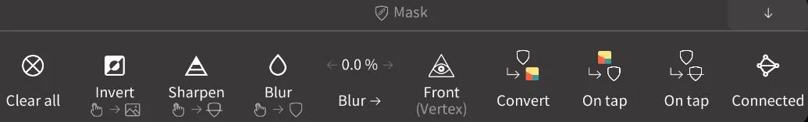

Nomad 里藏得最深的五个冷门技巧，翻完菜单才知道它们存在
大多数人用 Nomad 就是拿笔刷雕泥、拉个圆头完事。其实它的遮罩手势、提取生成器、屏幕空间平滑、雕画同开这些功能，官方几乎不宣传，却能让你一个人干出三人份的活。
你以为 Nomad 只是个 iPad 上能雕泥的 ZBrush 替代品？拿手指戳戳就能捏出个小人头，最多再切个对称画两笔颜色——去它的官网看一眼就知道藏了多少东西，安装包从官方下载拿就行。那你跟半年前的我一样，只用了它 30% 的力气。
这段时间我把它的设置菜单从顶到底翻了三遍，有些功能藏得真深：要么是某个按钮长按才会弹出，要么是某个笔刷的次级设置里塞了个"Relax"小开关，官方手册提了半行字就没了，后来去Nomad文档翻了一下才弄明白全部细节。今天就把五个我用得最爽、但身边很少有人知道的冷门技巧抖出来。
遮罩的手势快到离谱
遮罩（Mask）这个东西，你肯定见过——灰色蒙一层，被罩住的地方就动不了。但你是不是每次都要切到 SelMask 工具、选个矩形或套索、慢慢描一遍轮廓？我以前也这么干，直到某天按住左下角那个快速遮罩按钮不放，手指在屏幕上随便划了两下，发现它在反转遮罩。
这一下就打开新世界的门：轻点背景 = 反转、在背景上拖动 = 清空、轻点已遮罩区域 = 模糊、轻点未遮罩区域 = 锐化。四套手势全藏在长按状态里，没任何 UI 提示，完全是 ZBrush 那套肌肉记忆搬过来的。

遮罩工具栏那一排按钮我也研究了好一阵。Sharpen 和 Blur 不是给你画图用的——它们管的是遮罩边缘的过渡带：过渡带宽的地方，雕刻强度从 0 渐变到 100%；过渡带窄的地方，边界就是一刀切。所以做硬表面转折的时候，先拿 Blur 糊一下遮罩边缘，再去刻折痕，出来的边缘就是自然收住的，不会像切蛋糕那样生硬。
Front 按钮更绝：只罩住朝向镜头的正面顶点。做人物脸部表情的时候我经常用它——正面罩住不动，背面随便雕，拉脖子动嘴的时候脸不会跟着变形。
从遮罩能"长出"新几何
这个功能我敢说 80% 的人没用过。遮罩设置菜单里藏着三个生成器：Extract、Split、Carve，它们能把遮罩区域直接变成新的物体。
Extract（提取）是最有用的一个。你在模型上用遮罩圈出一个区域，点 Extract，它就把这个区域拉成一圈带厚度的壳体。高度可以正也可以负——正的向外鼓，负的向内陷。眼睑、护甲、衣领、贴边装饰，这些东西不需要你额外新建几何体再对齐，遮罩圈一下，厚度调一下，直接"长"出来。
平滑度迭代控制边缘的圆润度，数值低出来就是锋利的金属壳，数值高就是软乎乎的布料边。边循环选项打开之后，壳体侧面还能长出方形布线，方便你后续做细分曲面。
Split（分割）则是把遮罩区和非遮罩区同时提取成两个独立物体，相当于沿遮罩边界一刀切开。封口方式有三种：None 不封口（像一片叶子）、Fill 直接封平、Shell 封一个带厚度的底。Carve 更狠——按指定深度在表面切一圈，像剥橘子皮那样挖掉一层。
有个坑：提取预览默认开启，点了 Extract 之后菜单还停在预览状态，你看不见新生成的壳体。关掉菜单它才会突然冒出来——我第一次以为自己操作错了，差点把模型删了重雕。
平滑笔刷里还藏着个木槌模式
平滑笔刷本身大家都用——抹不平的地方刷两下就好。但它有两个地方值得专门拉出来说。
第一个是屏幕空间平滑（Screen Smoothing）。普通平滑的效果跟多边形密度直接挂钩：面数越多，每个顶点能移动的距离越小，平滑就越"没劲"。高面数模型上，你把强度拉满也像在挠痒痒。开了屏幕空间平滑之后，平滑效果就跟拓扑无关了，不管面数多寡，抹平力度始终一致。代价是计算量更大，低性能设备上可能需要把 Screen samples 调低一些。
第二个是 Sub 模式下的 Relax。你切到 Smooth 笔刷，把笔刷模式从默认的 Add 切到 Sub，再去刷，会发现它不是"抹掉"细节，而是松弛线框——把被拉歪的布线整理顺，尽量保留几何本身的起伏。这个模式我用它搭配体素重拓扑救过好几次场：模型被我雕得布线全扭了，先 Relax 一遍把线理顺，再重拓扑，出来的网格质量直接上一个档次。
压平笔刷（Flatten）和平面化（Planar）这俩我也经常搞混。简单说：压平朝笔刷覆盖区域的平均平面收拢，适合局部找平；平面化以更大范围的基准平面为目标，适合切出规整的平面块。做机甲装甲的时候，平面化笔刷是主力——切出来的装甲片平整得像激光切割机出的。
还有个 Stable smoothing（稳定平滑）选项，让平滑效果跟拓扑密度变化解耦。模型上有粗有细的区域，开了它之后平滑力度均匀了，不会有的地方被抹成纸、有的地方纹丝不动。
一边堆泥一边上色，雕画同开
传统 3D 上色要先展 UV——把模型摊平成一张平面贴图再画，光展 UV 这一步就能耗掉大半天。Nomad 走了另一条路：绘画信息直接存在顶点里，也就是 PBR 顶点绘画。模型有多少顶点，就有多少个"像素"可画。几百万顶点的模型，表面涂装精度足以刻画毛孔级细节。
但顶点绘画最爽的不是"不用展 UV"——是它能跟雕刻同开。
任何雕刻工具的设置里都有个"笔触绘画"的勾选项。勾上之后，你就可以一边堆泥一边上色了。绘画有独立的强度滑块，跟雕刻强度分开控制；Alpha、衰减、随机化三个开关决定它们是否影响颜色。我做人体模型的时候常用这个：皮肤底色跟着肌肉走势走，雕哪里就顺便上哪里的色，不用雕完再换工具刷一遍。
还有个小技巧：Matcap 观察模式下金属度和粗糙度会被忽略，只剩颜色。如果你在雕画同开的时候发现金属质感看着不对，切到 Matcap 就能只看颜色对不对，不被材质属性干扰。
大面积铺色的时候别急着手刷，整体填充和三平面工具比手刷均匀得多。低面数物体上画金属质感时，记得开启平滑着色——不然高光会断成一小块一小块的。
恢复购买别在软件里找，去找商店
最后说个跟功能无关但很关键的坑。我有个朋友 iPad 换了新一代，Nomad 装回去发现变成未购买状态，以为开发跑路了。其实完全不是。
Nomad 的授权绑在商店账号上，不是绑在设备上。App Store、Google Play、AppGallery 这三个商店各卖各的，互不通用——你在 Google Play 买的，换 iPad 要在 App Store 重买，反过来亦然。桌面版是另一条路：激活码绑机器 ID，换机前要先去购买门户释放旧设备名额。
恢复购买的排查顺序是固定的：先在"关于"菜单里点 restore purchase（左上角那个应用图标点进去），确认登录的是购买时用的账号（Google Play 上最容易栽在这，我自己就登错过一次），重启设备，等几个小时——商店的同步有时候不是实时的。实在不行重装，但重装前一定要先备份项目文件。
开发者能帮你查证的只有"某邮箱是否有购买记录"，账号和支付同步全由商店处理。官方 FAQ 特意提醒：换设备授权问题别发邮件给开发者，直接找商店客服。
这五个技巧只是冰山一角——Nomad 的设置菜单里还有一堆藏着的东西：遮罩能转面组、面组能转遮罩、隐藏管"暂时不看"跟遮罩管"暂时不动"是两套系统能互相配合……把它用透了，一个人能干出三个人的活。我现在还在翻，翻出新东西再来跟你唠。
这套资料我平时也维护在三个仓库，方便不同网络环境下的人取用：GitHub 是主版本，国内访问慢的可以直接去 Gitee 或 GitCode 的镜像。